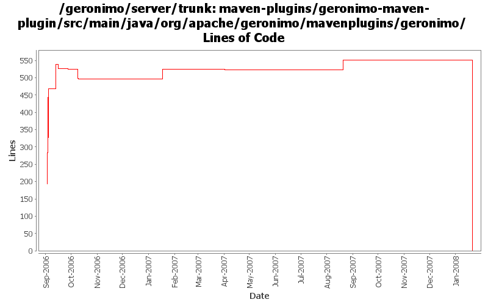

[root]/maven-plugins/geronimo-maven-plugin/src/main/java/org/apache/geronimo/mavenplugins/geronimo
 module
(0 files, 0 lines)
module
(0 files, 0 lines)
 reporting
(0 files, 0 lines)
reporting
(0 files, 0 lines)
 server
(0 files, 0 lines)
server
(0 files, 0 lines)

| Author | Changes | Lines of Code | Lines per Change |
|---|---|---|---|
| Totals | 84 (100.0%) | 1301 (100.0%) | 15.4 |
| jdillon | 78 (92.9%) | 1203 (92.5%) | 15.4 |
| kevan | 4 (4.8%) | 60 (4.6%) | 15.0 |
| djencks | 1 (1.2%) | 27 (2.1%) | 27.0 |
| gawor | 1 (1.2%) | 11 (0.8%) | 11.0 |
(GERONIMO-3771) Moved maven-plugins/* to buildsupport/*, updated groupId to org.apache.geronimo.buildsupport
0 lines of code changed in 11 files:
perform more precise query to get the right ServiceInfo object. this should fix the tomcat testsuites error with deploying app client modules
11 lines of code changed in 1 file:
Slightly better debug/trace exception reporting
41 lines of code changed in 1 file:
Replace genesis plugin-support with mojo plugin-support
*FIX SOME EVIL INDENT TOO*
3 lines of code changed in 3 files:
GERONIMO-2736 add ability to run app clients in integration tests
27 lines of code changed in 1 file:
GERONIMO-2537 Update the src headers in the non-module files. They need to be compliant with the new ASF src header and copyright policy (http://www.apache.org/legal/src-headers.html). I also did some cleanup of the src headers and tried to get them in a consistent format
60 lines of code changed in 4 files:
Remove unused imports
0 lines of code changed in 1 file:
Update to reflect latest genesis changes
3 lines of code changed in 3 files:
(GERONIMO-2419) Enabling logging for start-server, hooked up reporters API for exception handling, Adding a Surefire reporter which will output reports in a surefire manner, so we can re-use the surefire html report fluff to visualize
Massaged from reporters.patch by Prasad
1 lines of code changed in 1 file:
(GERONIMO-2359) Applying slighlty modified patch from Prasad to improve module handling
1 lines of code changed in 1 file:
(GERONIMO-2359) Applied modified versions of patches submitted by Prasad (thanks)
Moved all server related mojos to the o.a.g.m.g.server package
Added all new module mojos to the o.a.g.m.g.module package
Renamed install, start and stop goals to install-assembly, start-server and stop-server
Added aliases for install, start, stop that point to install-assembly, start-server, stop-server
Adding (augmented from patches) start-module, stop-module, deploy-module and undeply-module
Added aliases deploy and undeploy that point to deploy-module and undeply-module
Added list-modules goal to show what modules are running and non-running
Module operations show tree-like view of targetId's when available
75 lines of code changed in 3 files:
Allow -DgeronimoHome= to be used to point to a pre-installed assembly, when used no installation will happen, install goal can still be used to verify that the value looks like a server assembly
Using discovery for geronimoHome if not set (for both artifact and non-artifact based installs)... now married to zip format to discover
Cleaned up logging
101 lines of code changed in 3 files:
Renamed installDir to geronimoHome
When using assemblyArchive detect the value for geronimoHome
Changed outputDirectory to installDirectory, which can be set on the command-line
Chmod bin/*.sh to be executable
Updated site usage docs
53 lines of code changed in 2 files:
Added comments about some future changes/cleanup
9 lines of code changed in 2 files:
Use ObjectHolder instead of Throwable to hold errors in the runner thread
Add support for `mvn geronimo:start -Ddebug=true` to enable a predefined set of JVM debug flags
Add support for server.jar's --override via geronimo:start's startModules configuration
56 lines of code changed in 2 files:
Update to use new license headers
98 lines of code changed in 7 files:
Update to reflect new package names for some genesis bits
Moved JCL Log adapter to plugin-support
2 lines of code changed in 3 files:
Minor logging changes
3 lines of code changed in 1 file:
info to debug
1 lines of code changed in 1 file:
Add comment about moving logging bits to MojoSpport (plugin-support)
8 lines of code changed in 2 files:
Adding a maven plugin Log to JCL Log adapter
Hooking it up, forcefully since geronimo-kernel tries to install its own logging bits
This basically allows helper objects (like ServerProxy) to use JCL, but have it really go to Maven
26 lines of code changed in 3 files:
Moved assembly config and helpers to InstallerMojoSupport
184 lines of code changed in 2 files:
Added ServerProxy.shutdown() and using this for geronimo:stop
31 lines of code changed in 3 files:
Add intermediate abstract class for installer logic
4 lines of code changed in 3 files:
Adding geronimo:install helper, pending how to allow geronimo:start to re-use this goal
65 lines of code changed in 1 file:
Add comment about shutdown using ServerProxy
4 lines of code changed in 1 file:
Adding ServerProxy helper to facilitate checking if the server is loaded
Unfortunately I was not able to figure out how to do this with JMX alone, so we need to depend on geronimo-kernel to pick up classes
11 lines of code changed in 2 files:
Removed required for some params
0 lines of code changed in 1 file:
Start of support for plain file-based assembly install
Added install refresh support, either force with -Drefresh=true, or if the assembly zip was updated
Added verify timeout, to catch when startup hangs, pending better detect of start to be more effective
144 lines of code changed in 4 files:
Comment about beter refresh handling
5 lines of code changed in 1 file:
Hook up more configuration for picking an assembly, more than one assembly artifact can be configured, and -DassemblyId can be used on the command-line to pick the assembly to be used.
Exposed more start options, quiet, verbose, etc... default to --long for better feedback
Port, username and password are now configurable
Using Ant's Java task to start/stop
270 lines of code changed in 4 files:
Join the thread, don't wait
4 lines of code changed in 2 files:
Rename package
0 lines of code changed in 4 files: